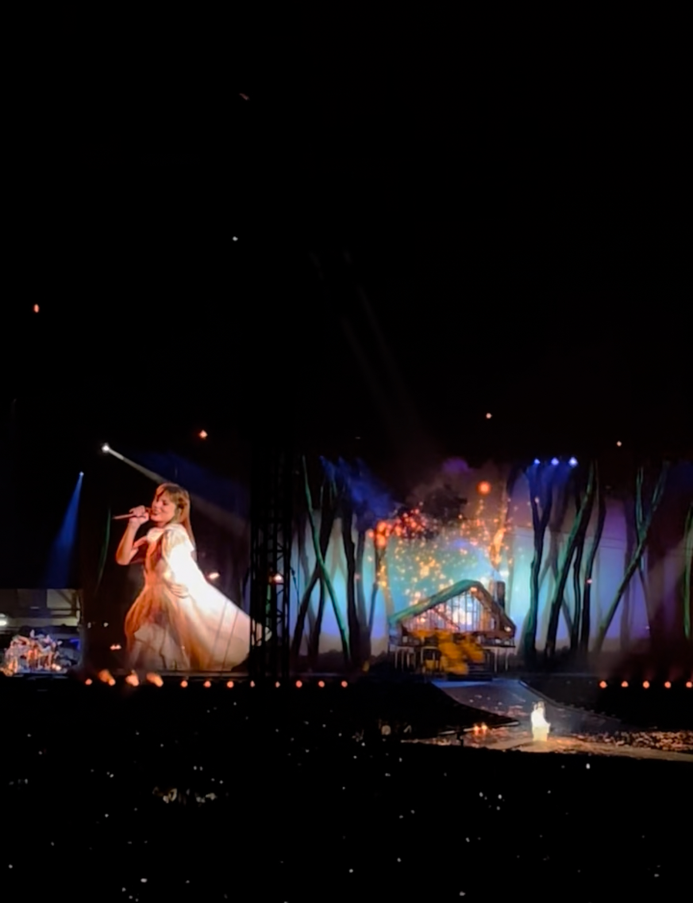

"Folklore," Taylor Swift's eighth studio album, was released on July 24, 2020. This album marked a significant departure from her previous pop sound, embracing a more indie-folk and alternative style. Created during the COVID-19 pandemic, "Folklore" features introspective lyrics and a more subdued musical approach. The album includes collaborations with Aaron Dessner of The National and Bon Iver. It received widespread critical acclaim for its storytelling and production, debuting at number one on the Billboard 200 chart and winning the Grammy Award for Album of the Year in 2021.
| Track Number | Song Title | From the Vault? | Features |
|---|---|---|---|
| 1 | the 1 | ||
| 2 | cardigan | ||
| 3 | the last great american dynasty | ||
| 4 | exile | Bon Iver | |
| 5 | my tears ricochet | ||
| 6 | mirrorball | ||
| 7 | seven | ||
| 8 | august | ||
| 9 | this is me trying | ||
| 10 | illicit affairs | ||
| 11 | invisible string | ||
| 12 | mad woman | ||
| 13 | epiphany | ||
| 14 | betty | ||
| 15 | peace | ||
| 16 | hoax | ||
| 17 | the lakes |

"Evermore," Taylor Swift's ninth studio album, was released on December 11, 2020, as a surprise follow-up to her critically acclaimed "Folklore." Continuing the indie-folk and alternative sound established in "Folklore," "Evermore" delves deeper into storytelling with rich narratives and emotional depth. The album features collaborations with Aaron Dessner, Bon Iver, and HAIM. "Evermore" received positive reviews from critics and fans alike, debuting at number one on the Billboard 200 chart. It solidified Swift's versatility as an artist and her ability to evolve her musical style.
| Track Number | Song Title | From the Vault? | Features |
|---|---|---|---|
| 1 | willow | ||
| 2 | champagne problems | ||
| 3 | gold ruch | ||
| 4 | 'tis the damn season | ||
| 5 | tolerate it | ||
| 6 | no body, no crime | HAIM | |
| 7 | happiness | ||
| 8 | dorothea | ||
| 9 | coney island | The National | |
| 10 | ivy | ||
| 11 | cowboy like me | ||
| 12 | long story short | ||
| 13 | marjorie | ||
| 14 | closure | ||
| 15 | evermore | Bon Iver | |
| 16 | right where you left me | ||
| 17 | it's time to go |